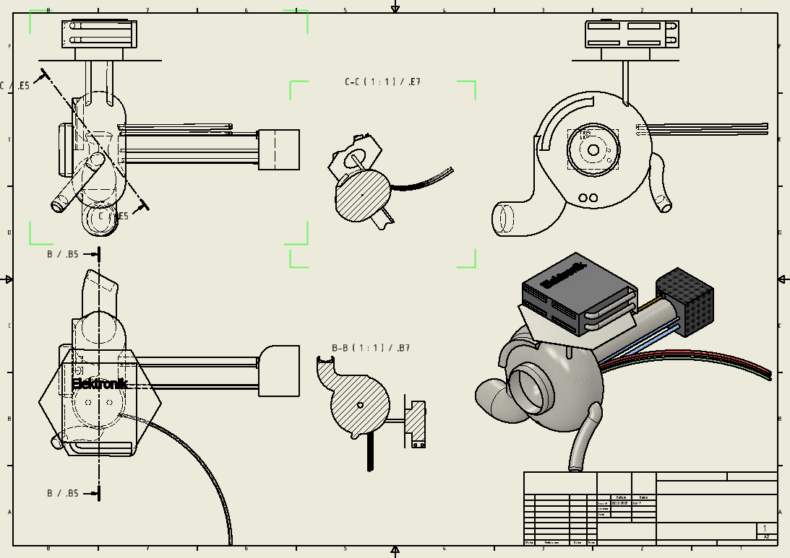
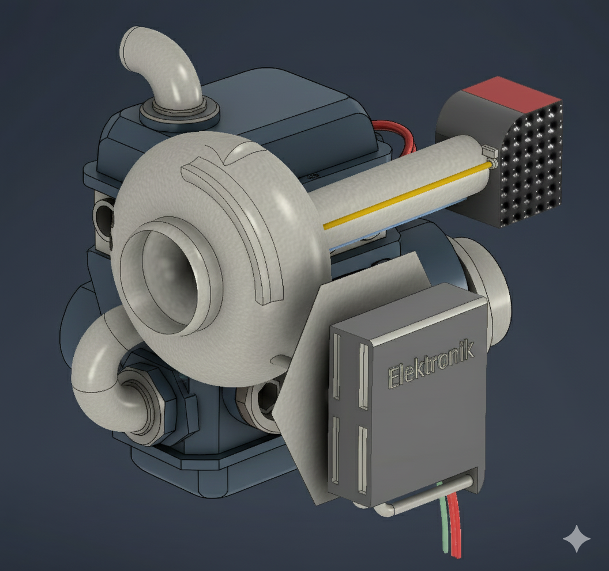

Projekt der Rheinischen Hochschule | Technisches Projektmanagement | Ralf Thümler

Wir haben bei unserem Prototyp bewusst darauf geachtet die Elektronik separat am Turbo anzubauen, um unser Budget einzuhalten

Der E-Turbolader eliminiert das klassische „Turbolader-Loch“, da er durch den Elektromotor unabhängig vom Abgasstrom sofort anspricht und maximalen Ladedruck bei jeder Drehzahl liefert. Damit vereint er die brachiale Kraft eines Turbos mit der blitzschnellen Reaktion eines Saugmotors für maximale Effizienz und Fahrspaß.
Weniger Emissionen, schütze die Natur! Durch die elektrische Unterstützung optimiert der E-Turbolader die Verbrennung im Motor bereits bei niedrigen Drehzahlen, was den Kraftstoffverbrauch und den CO2-Ausstoß deutlich senkt. Zudem ermöglicht er ein effizientes „Downsizing“ der Motoren, ohne dabei an Leistung einzubüßen, wodurch Ressourcen geschont und Schadstoffemissionen reduziert werden.
Unser Prinzip beruht darauf, das Erlebnis E-Turbolader für jeden zu ermöglichen. Ein günstiger E-Turbo demokratisiert den Zugang zu effizienter, emissionsarmer Motorentechnologie und beschleunigt so die Mobilitätswende durch eine breitere Marktakzeptanz.